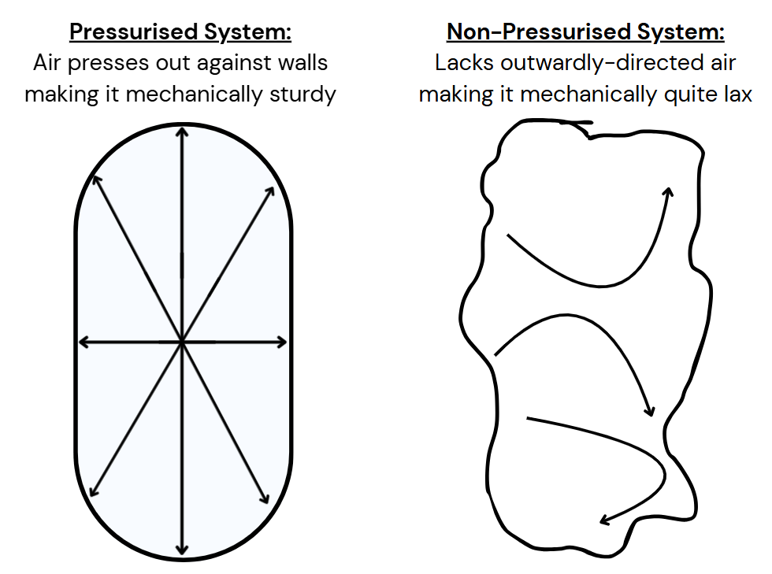

Breathing for Lifters
Make this one change to completely transform your lifting…

“You can’t fire a cannon from a canoe”
Well you could, but it would be messy. Because the canoe is inherently unstable. Bobbing around on the water with no fixed position. So the massive recoil of cannon would demolish the poor dudes shooting it.
And we can use this analogy to better understand how good breathing can improve our mechanics for lifting weights.
To lift heavy with great technique you need to create a stable foundation. A structure that’s stiff, and therefore mechanically capable of performing reps under load.
Conversely, a relatively unstable, or lax structure is simply at a mechanical disadvantage to lifting that same weight.
So generally, the ability to create stiffness is a good thing when trying to express force.

(I’m a visual guy so this might help you to see what I mean. Sorry for my poor drawing skills.)
And it turns out, if you can change this one thing about your breathing, you’ll completely change the way you lift, by ‘pressurising your system’ (and probably hit a couple of PRs too)…
Here’s how to do it:
Let’s say you’re performing a barbell back squat.
As you accumulate reps throughout your set, you’ll fatigue, and performing those reps will become increasingly difficult. Normal.
As you fatigue, you’ll need to rely more on proper breathing technique in order to maintain stiffness through the midsection.
To increase stiffness and stability, take a deep, aggressive breath into your belly whilst you’re standing, before completing your next rep.
This pressurises the system.
(for more on diaphragmatic breathing, check out this video I made).
Lower yourself into the squat, and then aggressively exhale as you standing again.
Think “blow out the birthday candles”.
You don’t need to breathe like this on every rep, but I think you’ll find it comes in particularly handy on those final few really hard ones.
Generally speaking though, breathing out whilst squeezing a muscle will help you achieve a cleaner contraction in the target area, and less likely to wobble around under the weights. In fact, silent breathing with no real intention is one of the most common mistakes I see in the gym.
Take-home:
Breathe assertively when lifting. Use it as a tool to create a stable base from which to lift, and think “blow out the birthday candles” to improve the quality of muscle contraction.
By the way, if you have any questions or even some training footage that you’d like reviewing, I’d be happy to help. Just email it to me at hello@coachbower.com and I’ll take a look!
Talk soon,
Michael